One week inside the content engine
Monday to Friday: research, strategy, the writer run, client review, publishing and measurement. At each step you can see what a person does and what the agents do.
We measure what your buyers search for and ask AI assistants, turn that into a content calendar where every topic traces to a real demand signal, and hand each topic to a run of about 20 specialist AI steps that write, link, edit and score the article against your voice, audience and legal rules in minutes. People set the rules, approve the calendar and approve every draft. Nothing goes live until a person presses publish, and every published article feeds the next one.
The whole system on one page
Two lanes. The top lane is what people do. The bottom lane is what the agents do. Work moves left to right, and Friday feeds Monday.
Research: the topic agent reads the numbers and proposes the week
Monday is the topic agent’s day. It reads your Venture Input Pack, your own archive and fresh web research, and proposes what to write. The pack itself is rebuilt once a quarter as the strategy document; what refreshes weekly is the demand data inside it.
Person What people do on Monday
- Strategist: reads the refreshed KPI sheet (it lands Monday, see Friday’s section for why), then pulls this week’s rows from the approved calendar. If the calendar is running low, they run the topic agent for the next block of weeks and read its proposals before anything moves on.
- You, once a quarter: confirm the pack’s picture of your three audiences, your calls to action and your competitors, and tell us which published posts are yours and which were ours.
AI agent Rule check What the system does on Monday
- 11:00 UTC, keyword refresh: monthly search volume is re-measured for every tracked keyword in every pack, so the MSV column the topic agent reads is this week’s number, not last quarter’s.
- Topic agent: proposes a block of topics from three sources: gaps and follow-ups in your own archive, fresh web research, and the measured demand in the pack. Every row carries a primary keyword, supporting keywords, a funnel stage, the kind (trend, gap fill, extension), the audience segment, the call to action and the links it plans to place. Rows with no pack signal are rejected.
- Quarterly, the Venture Input Pack: crawls your site and competitors, pulls search volume, probes five AI assistants with buyer questions, and scores every signal 0 to 5. Ten tabs, one workbook, saved to your Drive folder.
How we learn your site before we write for it
Two things read your archive. That’s how new articles link back into your existing pages instead of sitting there on their own.
AI agent The Blog Corpus tab in your pack
The pack crawls your blog from the sitemap (or lists it from Google’s index if your site blocks crawlers) and writes one row per post: title, cluster, a summary, meta description, topics, word count, publish date, five suggested internal links, channel, the entities and tools it names, and the URL. It is how we see which topics you already own and where the gaps are.
Rule check The nightly link graph
Every night at 02:00 UTC a crawler re-reads every published article on your site and across the portfolio, checks it is live, extracts its topic and links, and stores it with a meaning-vector in the catalogue. When the writer plans links, it searches that catalogue by meaning. This is where your sublinks come from, and it is what keeps your old posts in circulation.
For one live client, Tab 6 · Blog Corpus catalogued 120 published posts, grouped them into five topic clusters, and suggested five sublinks per post: 600 suggested links, and every one points at a real post already in the archive. Each new article then links back into the cluster it belongs to, so your authority builds up on the topics you want to own rather than being spread thin. The Cluster column decides where a new post fits. The Sublink columns are the candidates the writer reaches for.
The Venture Input Pack, tab by tab
Ten tabs. Target Queries is the one the topic agent lives in; it is split into three ranked sections: KW #n for Google keywords, SERP #n for answer-box queries, and AI #n for the prompts we put to AI assistants.
TOFU / MOFU / BOFU
Top: awareness and broad educational queries. Middle: comparisons, how-to and “best X”. Bottom: buying, hiring, vendor choice, implementation and ROI. Priority weights are 0.33, 0.66 and 1.00, so bottom-of-funnel wins ties.
Trend / Gap fill / Extension
Trend: timely, backed by fresh external research. Gap fill: something a past article introduced but never explained. Extension: the next question a past article raised. Every topic is one of these.
OWN / DEFEND / NOW / CHASE / OPEN
Own: you score 4 to 5. Defend: on par at 3. Now: a rival ranks and you do not. Chase: everyone is weak but a rival has something. Open: nobody scores. The flags decide the order of attack.
MSV, monthly search volume
The measured 12-month average of monthly Google searches for a query, national by default or city-level when you sell locally. A blank means no data, which is different from zero. Re-measured every Monday.
Prompts to chase
Buyer questions we put to ChatGPT, Perplexity, Gemini, Claude and Google AI Overviews, 16 prompts across 5 engines by default, to measure whether you are cited. Each becomes a target we can write toward; the AI #n rows in Target Queries.
Keyword / Phrase / Prompt
Keywords for classic search, phrases for answer boxes, prompts for AI assistants. Each track is its own ranked queue, split into waves: weeks 1 to 6, weeks 4 to 12, ongoing, backlog.
How a query is ranked
A quarter for search volume rank, a quarter for buying intent, and the rest for the openings: an empty slot, a rival-only slot, a rising trend, no top-30 ranking yet, no AI citation yet.
Lineage gate
A proposed topic must match at least one pack keyword, phrase or prompt, or it is rejected. This is what stops “sounds plausible” topics from reaching the calendar.
Supporting keywords
Two to four extra real pack rows per topic, each scored against that topic’s own context, so the article targets a cluster rather than a single phrase.
Strategy: turn research into a calendar you can sign
By strategy we mean four decisions: which queries we are going to win, in what order, at which funnel stage, and which existing pages each new article will link to. The topic agent writes that down as a monthly calendar. A person approves it before anything is written.
Person What people do on Tuesday
- Strategist review: opens the roadmap spreadsheet, reorders or cuts rows, checks the funnel mix matches the goal (lead generation leans bottom-of-funnel; authority leans top).
- Client sign-off: you see every title before it is written. Clients with their own topic list hand it over and the agent fills in the research around it.
- Start the batch: an operator submits the approved rows, picks platforms and the call to action, and presses start. That is the last human touch until review.
AI agent What the agents do on Tuesday
- Calendar sizing: number of weeks × your publishing cadence (1 to 4 posts a week) gives the topic count, up to 90 per run.
- Per topic: a brief, a primary keyword, supporting keywords, the funnel stage, the kind (trend, gap fill, extension), the audience segment and the call to action.
- Planned links: internal pages and cross-portfolio pages are scored on the same two-axis relevance rubric the writer will use, so the plan never promises a link the writer would reject.
- Dedup and lineage: near-duplicate topics are merged; anything without a pack signal is rejected.
Backlinking is planned here, not improvised later
Most content shops add links after the writing is done. We plan them first. Every topic in the calendar is scored for links before it is written: internal links back into your own archive (sublinks) and links from other brands in the Islands portfolio to you (backlinks). The roadmap workbook has a tab for it.
AI agent Rule check What the Topics tab plans per article
- Sublinks: which of your existing pages this article will link to, and whether it rescues an orphan page nobody links to yet.
- Backlinks: which portfolio brands will link to this article, which brands it links out to, and the counts both ways. Candidates are scored on the same two-axis relevance rubric the writer uses, so the plan never promises a link the writer would later reject.
- Delivered or not: once the article ships, the review board shows Planned Backlink Adherence, for example “1/2”, so the promise is checked, not assumed.
Rule check The Backlink Confidence tab
- Thresholds: minimum brands per topic, minimum placements per brand, maximum share any one brand may take, and a ship gate.
- Per-brand rollup: for each portfolio brand, placements, topics linked, share, whether the floor is met or the ceiling exceeded, and the gap to the floor.
- Score: coverage, distribution and utilisation combine into one confidence number with a PASS or FAIL, next to the funnel mix you asked for versus the mix the calendar actually has.
- Portfolio runs: when we plan all brands at once, extra tabs show an outgoing and incoming link matrix, brand by brand, with a target of at least six incoming cross-portfolio links per brand per batch.
The roadmap workbook, tab by tab
A single-client roadmap has the four tabs below. A portfolio run plans every brand together: it has one Topics tab per brand, plus Backlink Summary, Outgoing Matrix, Incoming Matrix, Portfolio Share and Field Dictionary. The examples here come from a portfolio run covering 21 brands.
Delivered as an .xlsx attachment to the email address on the request form, with a download link on the confirmation screen.
Execution: the writer run, every step named
If you’re wondering whether this is just ChatGPT with a good prompt: it isn’t. One topic goes in. About 20 specialist steps run, each with a single job and a structured output the next step can check. Times below are measured on a real 784-word article; the review loop is where most of the time goes.
From topic to review-ready draft
Four client models are loaded once per run so every step sees the same version. Then learn, measure, outline, link, write, edit, check, deliver.
Load the client’s models
what the agents are told about you before they read the topicAudience model Person-authoredRead by every writer
Your three ideal customer profiles: who they are, their situations, pain points, vocabulary and buying context. The operator picks primary, secondary, tertiary or a custom audience for the batch. The writers, the audience editor and the scorer all receive it.
Tone and voice model Person-authoredRead by writers and editors
Your stored voice profile: how you sound, how you open and close, sentence rhythm, words you use and never use. It is overlaid on what the style analyst learns from your recent articles, and it is stamped on every brief as a contract.
Legal and compliance model Approved by your reviewerRead by writers, editors and the gate
Your compliance policy compiled into rules: forbid a phrase, require wording, replace with an approved alternative, restrict to certain channels. The exact version is pinned for the whole run. If the policy cannot be loaded, every piece is marked failed rather than quietly skipped.
House style model Person-authoredRead by writers, simplifier, editors
Mechanics: length targets, sourcing rules, heading conventions, banned constructions, and a list of your pinned exemplar articles when you have chosen them. A linter checks the finished piece against it and records findings.
Learn
three agents run in parallelStyle analyst AI agent
Reads five of your recent articles (or your pinned exemplars) and writes down how they actually sound: openings, closings, sentence patterns, vocabulary. Clients who dislike their old voice skip this and get a neutral house voice.
Business analyst AI agent
Turns your product description and site into positioning, audience pains and content pillars, so the article argues from your point of view rather than a generic one.
Trend researcher AI agentLive web search
Runs a live web search on the topic and keeps only the citations. A separate synthesis step reads those sources and builds the research package, so the facts come from named pages, not from a model’s memory. Roadmap topics are used verbatim here; the agent does not invent its own.
Measure
real numbers from SEO data providersKeyword enrichment SEO data (Ahrefs or SEMrush)AI filter
Looks up genuine monthly search volume, difficulty, the current top-ranking pages, the questions people type, competitor pages and content gaps. An AI filter then removes off-topic keywords, such as a rival’s brand name, before they can reach a heading.
Competitive analyst AI agent
Reads what already ranks for the target query and notes what those pages cover and miss, so the brief can commit to a sharper angle rather than a rewrite of page one.
Outline and link
the plan the writer must followResearch brief generator AI agent
One brief per article: the angle, the reader, the goal, three to five arguments with evidence, the section structure, keywords, meta description and the sources to cite. The roadmap’s topic brief is passed in as the seed, and any operator keyword is locked here so it appears word for word later.
Backlink selector AI scoringRule combine
Searches everything the portfolio has published, by meaning, for candidate pages. The model scores each on two independent axes, industry fit and “would this reader click it right now”, and code combines the scores. Below the threshold means no link. Links the roadmap promised are guaranteed a seat in the pool.
Write
all formats from one runWriters: blog, Medium, Substack, email AI agents, in parallel
Each platform has its own writer with its own rules. All articles in a batch are written together on purpose, so titles come out varied instead of five versions of one headline. Writers see the destination title of every link so the clickable phrase describes the page it points to.
Content simplifier AI agent
One pass that untangles over-complicated sentences without changing claims, links or structure. It carries the compliance, house style and voice contracts so it cannot simplify a rule away.
Edit and score
the third-party check on our own workFive editors and one scorer AI agents ×6
Five specialist editors each own one dimension and never mark their own homework: links, voice and title, keywords, citation integrity and readability, audience fit and factual accuracy about you. A separate scorer grades eight categories from 1 to 10. Every category must reach 8. Anything below goes back to the editor that owns it, and only the failing editors re-run. The rubric is below.
Final checks
one AI pass, then deterministic rulesFormat verifier AI agent
Checks the checklist: 3 to 5 H2 headings and at least two H4s in sentence case, at least one list, blank lines before headings and lists, zero em dashes, every table under a heading, and the call to action as the final paragraph. Client overrides can change the rules.
CTA selector AI picksWording preserved verbatim
One call to action per article. With a single CTA it is used directly; with several, the model picks the best topical fit. Your wording is never changed, only its formatting. Invented promo codes are stripped.
Link hygiene gates Rule checks ×8
Code, not a model: unlink any anchor that shares no distinctive word with its destination title; unlink links whose page title changed since we catalogued it; remove sentences that name a portfolio brand in prose; unlink invented or dead URLs; collapse repeated links; strip citations that do not resolve; unlink any competitor on your block-list; and for service businesses, strip any outbound link not on your allow-list.
Keyword enforcer Rule checkOne small AI edit
Guarantees every operator-supplied keyword appears verbatim (one connecting word tolerated). If one is missing, a single edit adds it; the edit may add text but never shorten the article.
Compliance gate Rule checksAI for judgment rules
Phrase-level rules run first; an AI check settles the rules a phrase match cannot. The verdict is PASSED, FAILED with up to five cited violations, or NOT APPLICABLE when you have no policy. It never rewrites the text and never blocks delivery; it stamps the draft so your reviewer sees it first.
Title lock Rule check
For roadmap articles, the approved title is re-pinned verbatim after every step that could have changed it. What you signed off is what you get.
Link ledger and delivery Rule check
Every hyperlink in the delivered body is recorded: destination, anchor, kind (internal, cross-portfolio, CTA, external) and whether the roadmap promised it. Then the piece is delivered to your review board and, for site posts, created as a draft in your CMS. Delivery retries with backoff.
What the scorer grades, and who fixes it
Eight categories, 1 to 10 each. Every category must reach 8, so a strong voice score cannot carry a weak sourcing score. The editor that owns a failing category re-runs; the others do not.
| Category | What 10 out of 10 means | Owning editor | Pass |
|---|---|---|---|
| Backlink quality | Every link is relevant with an honest, topical anchor. Leaving out an ill-fitting link is not penalised; the count does not matter. | Backlink editor | ≥ 8 |
| Style adherence | Voice, openings, closings and sentence patterns match your style guide; indistinguishable from your own author. | Voice, style and title editor | ≥ 8 |
| Title quality | Sentence case, matches your past title style, never repeated in the opening paragraph. | Voice, style and title editor | ≥ 8 |
| Keyword coverage | Primary keyword in the title, first paragraph and an H2; secondaries woven in. A missing operator keyword caps the score at 4. | Keyword editor | ≥ 8 |
| Flow and readability | Smooth transitions, varied section lengths, zero recognisable AI patterns. | Citation and integrity editor | ≥ 8 |
| Source attribution | Every cited claim links to a named publisher, inline. No years in anchors, no stray markup, nothing padded. | Citation and integrity editor | ≥ 8 |
| Audience alignment | Speaks to the chosen customer profile’s exact situations, pain points, vocabulary and buying context. | Audience alignment editor | ≥ 8 |
| Venture accuracy | No invented or overstated capabilities, customers, outcomes or claims about your company. | Audience alignment editor | ≥ 8 |
How we know the writer followed the plan
Research and strategy decide what to write. Execution is only worth paying for if it does what was decided. Here’s how we hold the writing to the plan, and where you can check it on your review board.
| Decided in strategy | Enforced in execution | Visible to you as |
|---|---|---|
| The topic and its brief | The roadmap brief is passed into the brief generator, every writer and the reviewer as the seed; the scorer judges sourcing against it. | The article you approved, not a cousin of it |
| The title | Re-pinned verbatim after the editors and the format pass. | Same title in the calendar and the board |
| Primary and supporting keywords | Locked in the brief, enforced verbatim at the end, and a missing one caps the keyword score at 4. | Primary Keywords, Secondary Keywords, Target Queries properties |
| Planned internal and cross-portfolio links | Guaranteed a seat in the candidate pool with a score bonus; exempt from anchor-mismatch unlinking; protected in review. | Planned Backlinks list and Planned Backlink Adherence, for example “1/2” |
| Audience segment and call to action | The chosen profile is loaded as the authoritative audience; the CTA is looked up against your current config and injected verbatim. | ICP and the final paragraph of the draft |
| Prompts to chase | The AI-assistant prompt the topic was built for travels with the article. | Prompts property, for example “AI #16” |
| Legal rules | Pinned policy version for the whole run, then an independent final gate. | Compliance Status and Compliance Reason |
Client review and publish: people ship, the machine drafts
Drafts arrive on your review board with everything we tracked attached. Islands does an editorial pass, you approve, edit or reject, and a person presses publish. There is no path in the system that publishes on its own.
Person What people do on Thursday
- Islands editor: first pass on the board, stage “Draft (Islands only)”. Checks the compliance verdict, the link counts and the house-style findings.
- You: stage “Client Review”. Approve, edit in place or reject with a note. A rejection note becomes a rule next week.
- Publish: stage “Ready to publish”, then a person presses publish in your CMS and sets the stage to “Published” with the live URL.
AI agent Rule check What the system does on Thursday
- Board properties: meta description, platform, stage, keywords targeted, target queries, prompts, audience, voice, number of internal and cross-portfolio links, planned-link adherence, compliance status and reason.
- CMS draft: created at delivery time as a draft in Webflow, WordPress or Shopify today; any CMS with an API can be wired. Medium, Substack and email copy are delivered for posting.
- Indexing: once live, new pages are submitted to Google; indexation usually shows within 24 to 72 hours, and a check tool reports indexed, not indexed and never submitted.
Measure and compound: the week feeds the next one
By Friday this week’s posts are in the link graph, so next week’s articles can link to them. Your feedback from review has been written into the rules. The numbers themselves arrive at the start of the week, so Monday opens with evidence.
Person What people do on Friday
- Islands: turns any correction you sent this week into a written rule and a detector in your voice or compliance profile, so the same note is never given twice. One client went from voice v6 to v11 and from 12 to 19 compliance rules over two months of rounds.
- Islands: checks the graph viewer for this week’s posts and any orphan pages, and adds them to next week’s sublink plan.
Rule check What the system does on Friday
- Backlink graph, refreshed overnight every night at 02:00 UTC: the crawler re-reads every published article across all brands, checks it is live, extracts topics and links, and updates the node map. The interactive viewer is hosted at a password-protected link we share with you; it shows your brand’s nodes, links in and out, and your top hub articles.
- 03:30 UTC, corpus sync: your newly published posts are merged into your blog corpus record so the topic agent sees them on Monday.
- Weekly headline ideas: four topic headlines for Islands’ own brands are posted to our Slack at 10:00 UTC for the following week.
- First of the month, 00:00 UTC: the link report: cross-portfolio links each brand received, against the links other brands’ roadmaps promised it.
What actually happens each day, and where it lands
All times UTC. Every line is a scheduled job or a named person.
Real examples from live clients
Four clients. Civic North Consulting for results in the first weeks. Blanka and GrowTal for what a full programme does to rankings, AI answers and cost. Fuel Finance for what the drafts and the published page look like. Everything here is live client work.
Civic North: page one and an AI Overview citation within days
Two articles from one week’s batch, both published on the client’s site, both ranking on page one within a day or two of going live.
Within a day of going live, Civic North was the first organic result directly under the AI Overview for “awarded contract vehicle”. Two days after its post went live, Google’s AI Overview for “grant retainers” was citing Civic North as a source on how retainers give clients stable, predictable budgeting, even when the query was misspelled. The same post also ranks on page one, just below the People Also Ask box. These results came from Civic North’s first 30 days of content work, checked on 30 September 2026.
Read the two articles
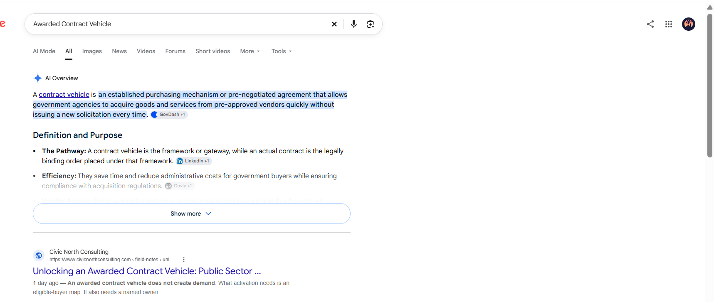
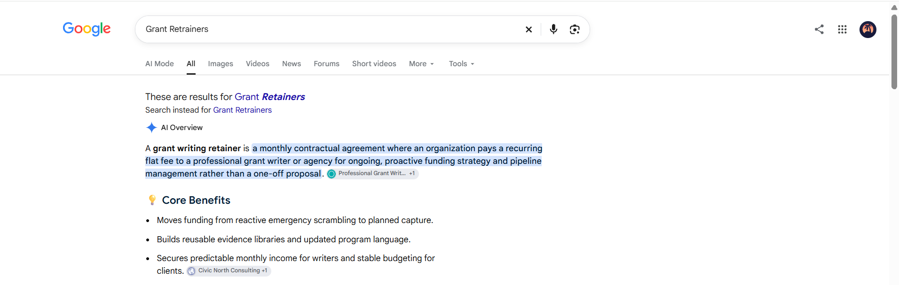
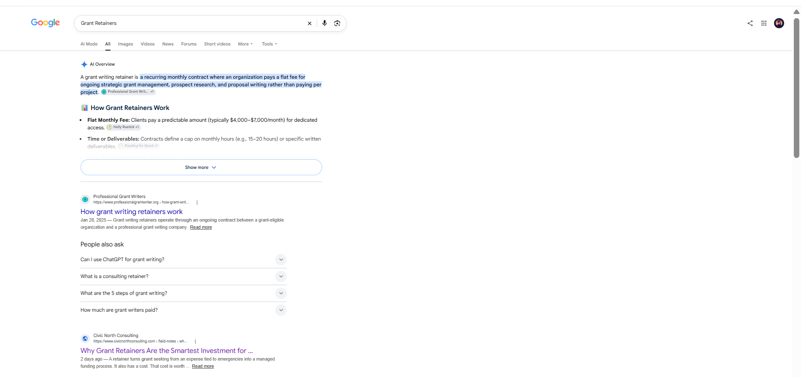
Blanka: 5× the content at 20% less than their previous agency
Blanka is a private-label beauty platform on Shopify, fulfilled from Toronto. Founders launch a branded beauty line with no inventory. Their previous agency cost more and shipped less.
We ran the full engine: blog, newsletter and SEO articles, every piece researched against Blanka’s ideal customer profile and written for what buyers were already searching. The first published piece went out one week after kickoff. Within 90 days Blanka ranked #1 for “how to start a beauty brand” and showed up in AI answers 6.6× more often.
Two more results came in on 2 October 2026. Google’s AI Overview for “guide to dropshipping makeup” now cites Blanka as its top source and names Blanka in the answer: “Blanka: Best for ready-to-brand private label makeup and beauty with integrated US/global fulfillment.” Blanka’s article is also the first organic result for that query. Blanka’s “Top Private Label Makeup Manufacturers in 2026” article is the first organic result for that search.
Read the case studies
- Blanka: 5× the content at 20% less than their previous agency
- Blanka: 6.6× AI visibility and a #1 ranking in 90 days
Read the two newest articles
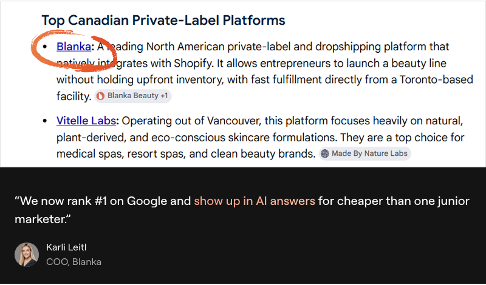
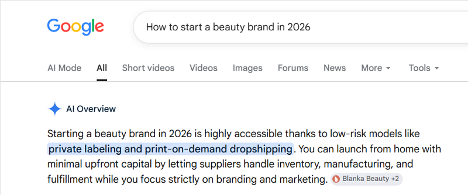
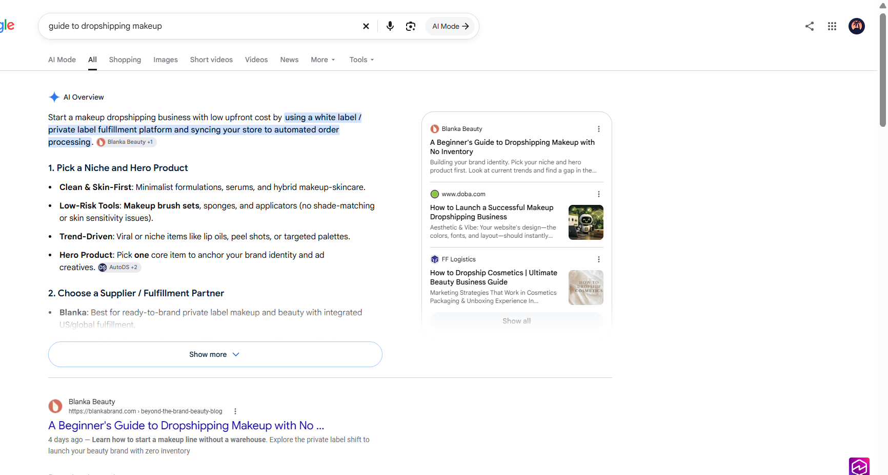
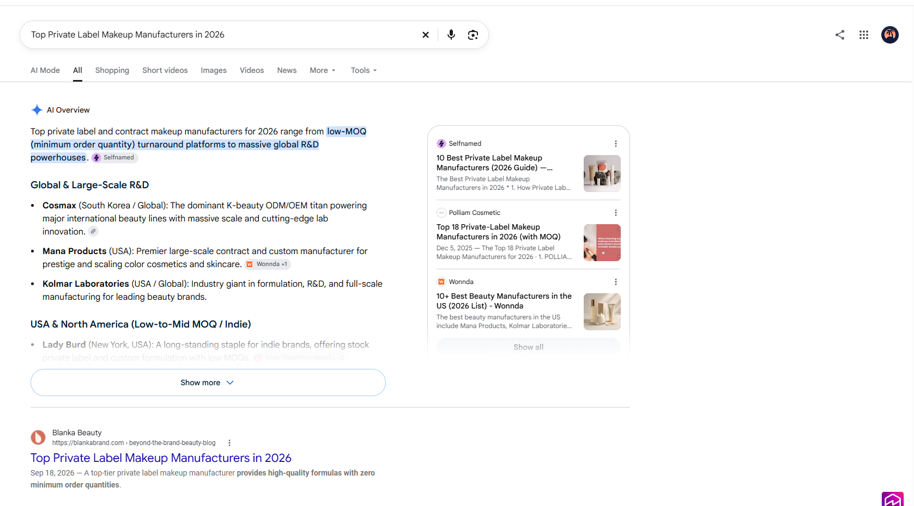
GrowTal: 496 keywords ranked from a standing start, 64% in the top 10
GrowTal connects growing companies with pre-vetted fractional marketing experts, from a CMO to an SEO lead. Their buyers search before they hire, so the job was to make GrowTal the answer every time.
Our strategy and keyword-gap agents mapped every high-value term in the fractional marketing space. The writers then built content for the exact queries GrowTal’s buyers use, and every article was scored through SEMrush before it was published. Islands content now accounts for 8% of the site’s impressions.
Read the case study
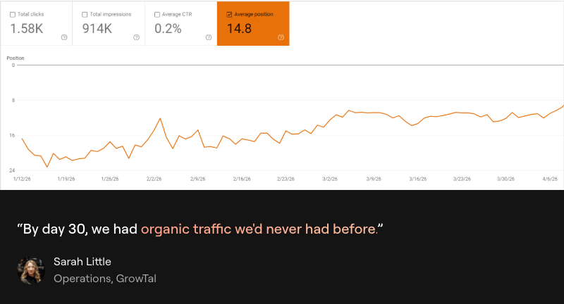
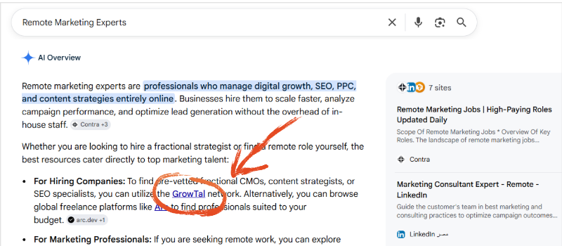
Where the copy lands
Every draft is a page in the client’s own review board. Links are already live inside the body, sources are inline, and the call to action is the last paragraph in the client’s wording.
TL;DR: An AI finance agent is software that runs a multi-step finance process. It can reconcile accounts, categorize transactions, draft variance notes, and build reports. It stops and asks a person when judgment is needed. Dashboards show you what happened. Chat copilots answer when you ask. Agents do the recurring work in between. The teams getting real value pair agents with clean data and human review.
Dashboards told you what happened. They didn’t do the work.
Most finance teams already have dashboards. Many now have an AI chat tool open all day. And yet the month still looks the same:
- Decisions wait for month-end reports. By the time the numbers are ready, the moment to act has passed.
- The close lives in one person’s spreadsheet. When they’re out, everything stalls.
- Errors surface after the board deck is out. Nobody had time to re-check every formula.
The numbers back this up. In APQC’s benchmark of 2,300 organizations, the median company needs 6.4 calendar days to close the month. The bottom quarter needs 10 days or more. Meanwhile, a June 2025 Gartner survey found that 84% of finance organizations have implemented or plan to implement AI, but only 7% report high impact.
What AI finance agents actually do
The best early use cases are frequent, rules-heavy, and painful to do by hand: month-end controlling, monthly financial analysis (our budget vs. actual guide covers the analysis itself), CFO and board reporting (see our guide to automated financial reports), and forecast refreshes.
What we track on every draft
The properties on the same board record. This is the data a reviewer sees before reading a word, and the data the weekly report reads back.
What it looks like once it is launched
The same pipeline, an earlier article, approved by the client and published on their Webflow site. The draft was created in their CMS at delivery time; a person pressed publish on 16 September 2026.
- Transitioning to an Agentic CFO Office, the article in the screenshot, live on fuelfinance.me.
- How Islands runs the same engine on its own brands, the public case study with newsletter and LinkedIn numbers.
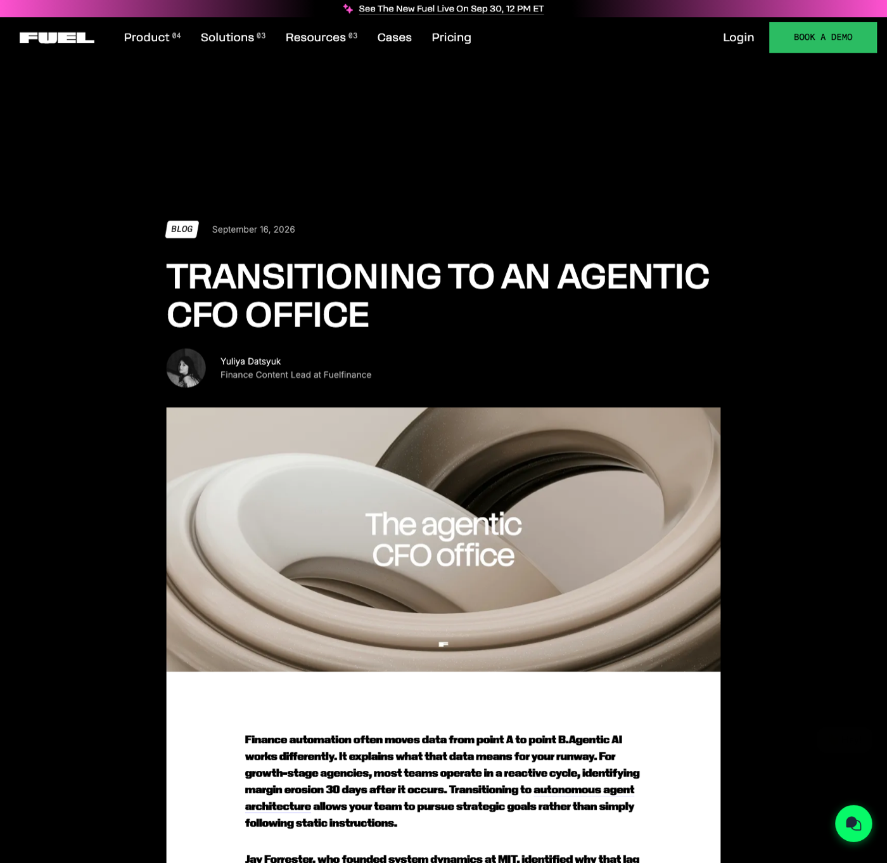
The link graph: every sublink and backlink, mapped
Every published article across the portfolio is a node; every internal link (sublink) and cross-portfolio link (backlink) is an edge. The selector reads this graph when it plans links, and the nightly crawl keeps it current. The panel on the left lists each venture with its article count and links out and in.
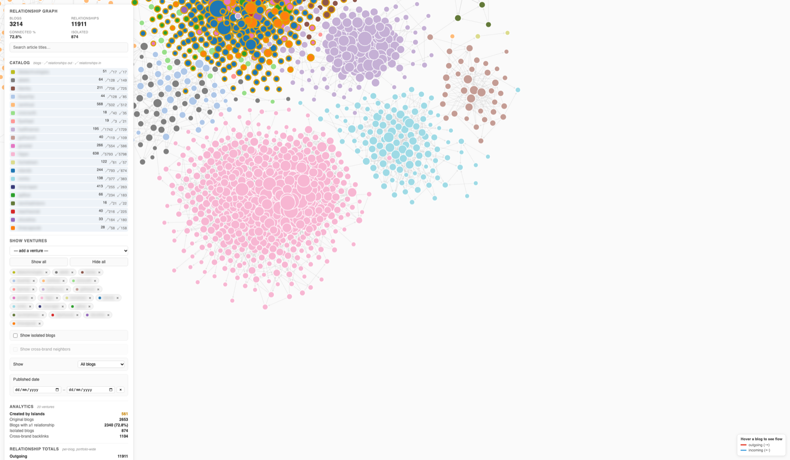
Sample files
The three workbooks every client gets. Open the samples on the call or send them over afterwards.
Venture Input Pack
Ten tabs: Read Me & Definitions, Company, Scorecard, Target Queries, Competitors, Blog Corpus, Technical Signals, Entity Footprint, Proof Points, Site Pages. Built quarterly; saved to the client’s Drive folder as “Venture Input Pack — Brand.xlsx”.
Open the sample in Google DriveContent roadmap
Four tabs: Read Me, Topics (39 columns including the backlink and sublink plan), Backlink Confidence, Field Dictionary. Emailed as an attachment after each topic-agent run.
Open the sample in Google DriveWeekly KPI sheet
One tab, one column per week from the start baseline, every section listed in the schedule above. Rebuilt every Monday at the same Drive link.
Open the sample in Google DriveInside the samples
We built a full pack and roadmap for Lumen Ledger, a fictional finance software company, so you can see exactly what lands in your inbox. Three tabs worth a closer look:
See the content engine run on your brand
Book a call and we will walk through your Input Pack, your calendar and your first writer run.